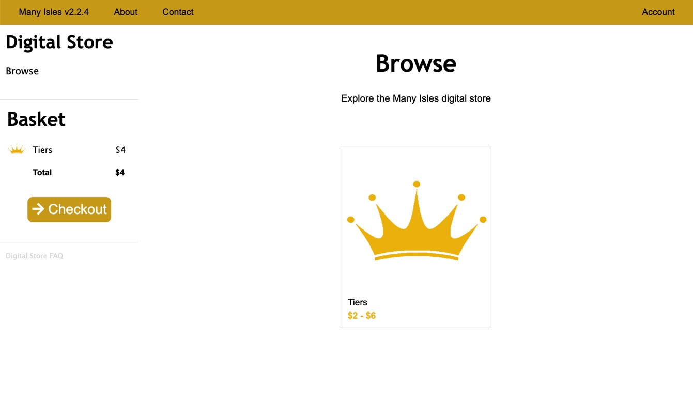

Many Isles Wiki - How To - Digital Store

Digital Store
The Many Isles digital store offers a small assortment of physical products, as well as some digital goods. Most of our actual products are found in the digital library.
Digital Store - Our Payment Host - Many Isles Credit?
Using the Digital Store

When entering the digital store via the homepage (using the "Store" tab), you'll find the digital store's homepage.
The digital store has a simple structure. On top, the standard navigation bar allows you to follow global Many Isles links. To the left, you have the basket column, which doesn't change. Then, in the center, is the main content block.
Basket Column
Digital Store. Clicking on these words redirects you to the digital store homepage.
Quick links. If you are exploring the store, the quick link says "browse", and clicking on it redirects you to the homepage. While checking out, it isn't a link.
Basket. As soon as you add any items to your basket, you will be able to view them here. Clicking on the header directs you to the basket page. Clicking on single items shows you to their information. Finally, "Checkout" starts your checkout process.
FAQ. Depending on the page content, some useful information can be accessed here.
Your Data
By necessity, some of your data needs to be stored while you explore the digital store. Here's what we do with it.
Basket Information
Any items you add to your basket are stored server-side and remain accessible as long as you don't close your browser. This means you can switch accounts, and the basket remains the same.
When you close the browser, all basket information is deleted. We do not store or look at your basket contents.
Account Information
During checkout, you submit two categories of personal information to us. The first is your account information. If you haven't yet made a Many Isles account when checking out, you can smoothly create one. See the Account article for more information on this data.
In Step 2, you need to submit your address. This is necessary so any physical products can be delivered to you. Address information is tied to your account, and on subsequent checkouts you will just have to confirm your stored address. You can also not fill it out if you have ordered no physical products. We will never send you anything by mail that you have not ordered.
Billing Information
The Many Isles never have access to your billing information or card details. Billing is handled by an external and secure portal, stripe. For more information, see Payments.